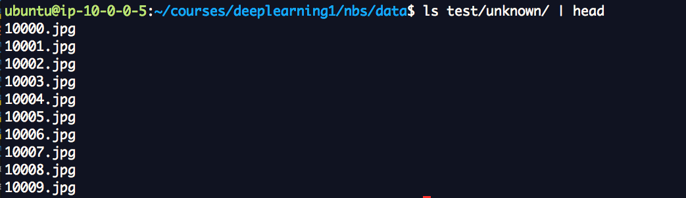

Deep Learning
fast.ai
Making neural nets uncool again
Make Deep Learning More accesible
Top down learning
AI,Machine Learning,Deep Learning
Agenda

|

|

|
|---|---|---|

|

|

|
Cats vs Dogs

Deep Learning Methodology
- Get data from Cats and Dogs Competition
- Train on the data
- Predict dogs or cats
Training files

Testing Files
How do we do validation
Take sample of training files and use them for validation
Work with sample data first
Summary
- Divide data into training, validation and testing sets
- Work with sample of data
Fine Tuning
Fine tuning is a process to take a network model that has already been trained for a given task, and make it perform a second similar task.
VGG16
Model trained on imagenet.Won ImageNet Large Scale Visual Recognition Competition in 2014.
Live Demo
Sample notebookTo summarize
- Deep learning Using Keras
- Deep learning methodologies
- Finetuning
- Vgg16
- Imagenet